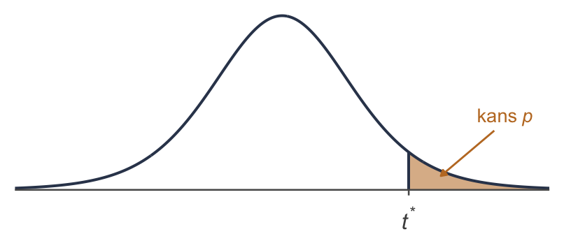

Tabel D · de t-verdeling
kritieke waarden voor een toets en voor een interval
In de tabel staat de kritieke waarde . Rechts ervan ligt kans p: die staat bovenaan, in de kolomkop. Tussen en ligt C: die staat onderaan.
Boven een tweedeling, onder een driedeling
Tabel D kun je van twee kanten lezen.
- Bovenaan staat een tweedeling: kans p in één staart, rechts van .
- Onderaan staat een driedeling: het midden C, met links en rechts elk een staart.
Voor een interval denk je in driedelingen, en dan kijk je onderaan. Allebei leiden ze naar dezelfde cel: als het midden C = 95% is, een kans van .95, blijft er .05 over voor de twee staarten samen, en dat is .025 per staart.
![Een klokvormige t-kromme bij df = 29. Het brede midden is blauw: C = 95%. De grenzen heten min t-ster en t-ster: min 2.045 en 2.045. Daarbuiten blijft links en rechts een smalle oranje staart over, elk (1 − C)/2 = .025. Onder de kromme hangt een stukje van tabel D, met links ervan drie woordjes: bij de kop staat 'kolom .025, één staart', en die kop is oranje, net als een staart. Bij de middelste rij staat 'rij df = 29'. Bij de onderste rij staat 'onderste rij 95%, het midden', en die 95% is blauw, net als het midden. De gestippelde lijn vanaf t-ster loopt recht naar beneden tot de oranje kop; daar neemt een gestippeld kader het over, de kolom omlaag tot in rij 29, waar 2.045 vet en omkaderd staat: kolom en onderste rij wijzen naar dezelfde cel.](08_tabel_d_files/figure-html/fig-bi-1.png)
voor een interval
In week 3 maakte je een 95%-interval voor alle 30 slechte slapers, met df = 30 − 1 = 29.
- Onderaan bij 95%, dan omhoog naar rij 29: 2.045.
- Bovenaan kom je in dezelfde kolom uit: (1 − .95)/2 = .025.
Dat is de uit week 3. Zie Figuur 1.
Een p inklemmen
De tabel geeft niet bij elke t een p. Wel kun je de p inklemmen tussen twee kolommen.
In week 2 vond je bij de slaapstudie t = 2.45, met df = 29. In rij 29 ligt 2.45 tussen 2.150 (kolom .02) en 2.462 (kolom .01). Dus:
- één staart: .01 < p < .02;
- twee staarten, maal twee: dan ligt p tussen .02 en .04.
Let op de volgorde: een grotere t hoort bij een kleinere p. In Figuur 2 zie je waarom: jouw staart, rechts van 2.45, is kleiner dan die rechts van 2.150 en groter dan die rechts van 2.462. R gaf p = .021, en die ligt er netjes tussen.

Voorbij de laatste kolom. Bij de gepaarde toets in week 3 was t = −4.52, met df = 14. Het minteken doet er niet toe: de kromme is symmetrisch, dus zoek 4.52. Het grootste getal in rij 14 is 4.140, bij .0005, en 4.52 ligt daar nog voorbij. Dus:
- één staart: kleiner dan .0005;
- twee staarten, maal twee: p < .001.
In Figuur 3 zie je het: jouw streep staat voorbij de laatste lijn die de tabel kent. Verder dan .0005 gaat tabel D niet.
![Het uiteinde van de rechterstaart van een t-kromme, ver ingezoomd: een lijn die van linksboven naar rechts zakt, tot vlak boven de grondlijn. Iets voorbij het midden een gestippelde verticale lijn, bij 4.140, met erboven 'laatste kolom .0005'. Rechts daarvan, laag op de kromme, bij 4.52, een dikke oranje streep: jouw t zonder minteken (jouw t was −4.52; de kromme is symmetrisch, dus zoek je rechts). Alles rechts van jouw streep is oranje, een laag stukje dat tot de rand van het plaatje loopt; zonder inzoomen zou het een haar dik zijn. Linksonder staat: jouw staart, kleiner dan .0005. Jouw streep staat verder naar rechts dan de laatste lijn die de tabel kent, dus jouw staart is kleiner dan de kleinste kans in de tabel.](08_tabel_d_files/figure-html/fig-voorbij-1.png)
Als je df er niet in staat
Na 30 slaat de tabel stukken over: 40, 50, 60, 80, 100 en 1000. Staat je df er niet in, neem dan de eerstvolgende kleinere die er wél staat. Bij df = 44 is dat 40. Ook bij een df met decimalen, zoals de 27.95 die R voor Welch geeft in week 3: neem 27, niet 28. Zonder R ken je die 27.95 niet; dan neem je zoals in week 3 de ondergrens, de kleinste van en (hier 14), en zit je nog wat voorzichtiger.
Waarom de kleinere? Hoe minder vrijheidsgraden, hoe dikker de staarten (week 2), en hoe verder naar buiten ligt. Bij df = 40 is = 2.021; bij df = 44 precies zou hij 2.015 zijn. Je interval wordt dus iets te breed, nooit te smal. En verwerp je met de kleinere df, dan verwerpt R met de echte df ook. Dat is de voorzichtige kant, dezelfde als bij de ondergrens van Welch in week 3.
De rij
Onder rij 1000 staat de rij : de t-verdeling met oneindig veel vrijheidsgraden, en dat is de normaalverdeling. Daar staan de drie ankers uit week 0, op drie decimalen: 1.645 (kolom .05), 1.960 (kolom .025) en 2.576 (kolom .005). In tabel A staat 1.645 niet precies; hier wel.
De tabel

| kans p in de rechterstaart (één staart) | ||||||||||||
|---|---|---|---|---|---|---|---|---|---|---|---|---|
| df | .25 | .20 | .15 | .10 | .05 | .025 | .02 | .01 | .005 | .0025 | .001 | .0005 |
| 1 | 1.000 | 1.376 | 1.963 | 3.078 | 6.314 | 12.71 | 15.89 | 31.82 | 63.66 | 127.3 | 318.3 | 636.6 |
| 2 | 0.816 | 1.061 | 1.386 | 1.886 | 2.920 | 4.303 | 4.849 | 6.965 | 9.925 | 14.09 | 22.33 | 31.60 |
| 3 | 0.765 | 0.978 | 1.250 | 1.638 | 2.353 | 3.182 | 3.482 | 4.541 | 5.841 | 7.453 | 10.21 | 12.92 |
| 4 | 0.741 | 0.941 | 1.190 | 1.533 | 2.132 | 2.776 | 2.999 | 3.747 | 4.604 | 5.598 | 7.173 | 8.610 |
| 5 | 0.727 | 0.920 | 1.156 | 1.476 | 2.015 | 2.571 | 2.757 | 3.365 | 4.032 | 4.773 | 5.893 | 6.869 |
| 6 | 0.718 | 0.906 | 1.134 | 1.440 | 1.943 | 2.447 | 2.612 | 3.143 | 3.707 | 4.317 | 5.208 | 5.959 |
| 7 | 0.711 | 0.896 | 1.119 | 1.415 | 1.895 | 2.365 | 2.517 | 2.998 | 3.499 | 4.029 | 4.785 | 5.408 |
| 8 | 0.706 | 0.889 | 1.108 | 1.397 | 1.860 | 2.306 | 2.449 | 2.896 | 3.355 | 3.833 | 4.501 | 5.041 |
| 9 | 0.703 | 0.883 | 1.100 | 1.383 | 1.833 | 2.262 | 2.398 | 2.821 | 3.250 | 3.690 | 4.297 | 4.781 |
| 10 | 0.700 | 0.879 | 1.093 | 1.372 | 1.812 | 2.228 | 2.359 | 2.764 | 3.169 | 3.581 | 4.144 | 4.587 |
| 11 | 0.697 | 0.876 | 1.088 | 1.363 | 1.796 | 2.201 | 2.328 | 2.718 | 3.106 | 3.497 | 4.025 | 4.437 |
| 12 | 0.695 | 0.873 | 1.083 | 1.356 | 1.782 | 2.179 | 2.303 | 2.681 | 3.055 | 3.428 | 3.930 | 4.318 |
| 13 | 0.694 | 0.870 | 1.079 | 1.350 | 1.771 | 2.160 | 2.282 | 2.650 | 3.012 | 3.372 | 3.852 | 4.221 |
| 14 | 0.692 | 0.868 | 1.076 | 1.345 | 1.761 | 2.145 | 2.264 | 2.624 | 2.977 | 3.326 | 3.787 | 4.140 |
| 15 | 0.691 | 0.866 | 1.074 | 1.341 | 1.753 | 2.131 | 2.249 | 2.602 | 2.947 | 3.286 | 3.733 | 4.073 |
| 16 | 0.690 | 0.865 | 1.071 | 1.337 | 1.746 | 2.120 | 2.235 | 2.583 | 2.921 | 3.252 | 3.686 | 4.015 |
| 17 | 0.689 | 0.863 | 1.069 | 1.333 | 1.740 | 2.110 | 2.224 | 2.567 | 2.898 | 3.222 | 3.646 | 3.965 |
| 18 | 0.688 | 0.862 | 1.067 | 1.330 | 1.734 | 2.101 | 2.214 | 2.552 | 2.878 | 3.197 | 3.610 | 3.922 |
| 19 | 0.688 | 0.861 | 1.066 | 1.328 | 1.729 | 2.093 | 2.205 | 2.539 | 2.861 | 3.174 | 3.579 | 3.883 |
| 20 | 0.687 | 0.860 | 1.064 | 1.325 | 1.725 | 2.086 | 2.197 | 2.528 | 2.845 | 3.153 | 3.552 | 3.850 |
| 21 | 0.686 | 0.859 | 1.063 | 1.323 | 1.721 | 2.080 | 2.189 | 2.518 | 2.831 | 3.135 | 3.527 | 3.819 |
| 22 | 0.686 | 0.858 | 1.061 | 1.321 | 1.717 | 2.074 | 2.183 | 2.508 | 2.819 | 3.119 | 3.505 | 3.792 |
| 23 | 0.685 | 0.858 | 1.060 | 1.319 | 1.714 | 2.069 | 2.177 | 2.500 | 2.807 | 3.104 | 3.485 | 3.768 |
| 24 | 0.685 | 0.857 | 1.059 | 1.318 | 1.711 | 2.064 | 2.172 | 2.492 | 2.797 | 3.091 | 3.467 | 3.745 |
| 25 | 0.684 | 0.856 | 1.058 | 1.316 | 1.708 | 2.060 | 2.167 | 2.485 | 2.787 | 3.078 | 3.450 | 3.725 |
| 26 | 0.684 | 0.856 | 1.058 | 1.315 | 1.706 | 2.056 | 2.162 | 2.479 | 2.779 | 3.067 | 3.435 | 3.707 |
| 27 | 0.684 | 0.855 | 1.057 | 1.314 | 1.703 | 2.052 | 2.158 | 2.473 | 2.771 | 3.057 | 3.421 | 3.690 |
| 28 | 0.683 | 0.855 | 1.056 | 1.313 | 1.701 | 2.048 | 2.154 | 2.467 | 2.763 | 3.047 | 3.408 | 3.674 |
| 29 | 0.683 | 0.854 | 1.055 | 1.311 | 1.699 | 2.045 | 2.150 | 2.462 | 2.756 | 3.038 | 3.396 | 3.659 |
| 30 | 0.683 | 0.854 | 1.055 | 1.310 | 1.697 | 2.042 | 2.147 | 2.457 | 2.750 | 3.030 | 3.385 | 3.646 |
| 40 | 0.681 | 0.851 | 1.050 | 1.303 | 1.684 | 2.021 | 2.123 | 2.423 | 2.704 | 2.971 | 3.307 | 3.551 |
| 50 | 0.679 | 0.849 | 1.047 | 1.299 | 1.676 | 2.009 | 2.109 | 2.403 | 2.678 | 2.937 | 3.261 | 3.496 |
| 60 | 0.679 | 0.848 | 1.045 | 1.296 | 1.671 | 2.000 | 2.099 | 2.390 | 2.660 | 2.915 | 3.232 | 3.460 |
| 80 | 0.678 | 0.846 | 1.043 | 1.292 | 1.664 | 1.990 | 2.088 | 2.374 | 2.639 | 2.887 | 3.195 | 3.416 |
| 100 | 0.677 | 0.845 | 1.042 | 1.290 | 1.660 | 1.984 | 2.081 | 2.364 | 2.626 | 2.871 | 3.174 | 3.390 |
| 1000 | 0.675 | 0.842 | 1.037 | 1.282 | 1.646 | 1.962 | 2.056 | 2.330 | 2.581 | 2.813 | 3.098 | 3.300 |
| z* | 0.674 | 0.842 | 1.036 | 1.282 | 1.645 | 1.960 | 2.054 | 2.326 | 2.576 | 2.807 | 3.090 | 3.291 |
| C | 50% | 60% | 70% | 80% | 90% | 95% | 96% | 98% | 99% | 99.5% | 99.8% | 99.9% |